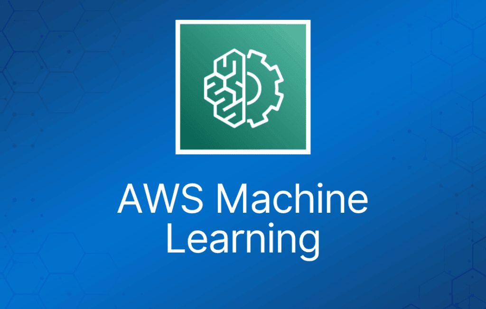
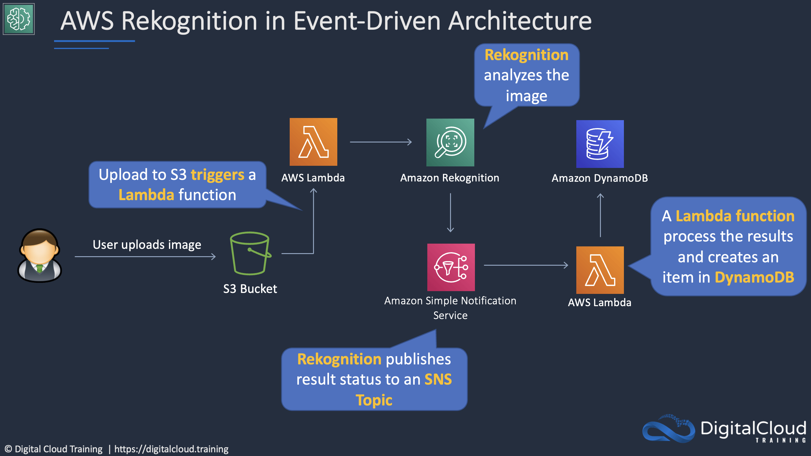
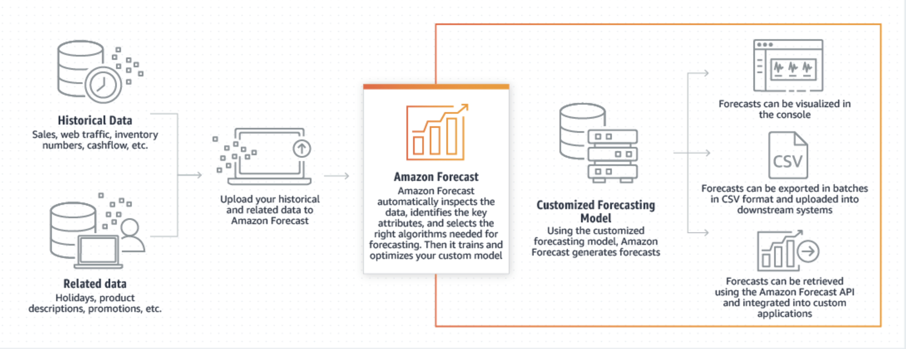

本文在 AWS Certified Cloud Practitioner 考试的背景下介绍 AWS 机器学习服务。这一类的服务在考题中经常出现，通常考查得比较宏观。
Amazon Rekognition
为你的应用程序添加图像和视频分析能力。
识别图像和视频中的物体、人物、文本、场景和活动。
处理存储在 Amazon S3 存储桶中的视频。
将完成状态发布到 Amazon SNS 主题。

Amazon Transcribe
为应用程序添加语音转文字能力。
录制的语音可以先转换为文本，然后才能在应用程序中使用。
使用称为自动语音识别（ASR）的深度学习流程，快速准确地将语音转换为文本。
Amazon Translate
神经机器翻译服务，提供快速、高质量且经济实惠的语言翻译。
使用深度学习模型，提供更准确、更自然的翻译。
为不同语言的用户本地化网站和应用程序等内容。
Amazon Textract
自动从任何文档中提取打印文本、手写内容和数据。
特性：
- 光学字符识别（OCR）。
- 识别关系、结构和文本。
- 使用 AI 提取文本和结构化数据。
- 既能识别手写内容，也能识别打印文本。
- 可从 PDF、图像、表单和表格等文档中提取。
- 理解上下文。例如知道该从收据或发票中提取哪些数据。
Amazon SageMaker
帮助数据科学家和开发人员准备、构建、训练和部署高质量的机器学习（ML）模型。
ML 开发活动包括：
- 数据准备。
- 特征工程。
- 统计偏差检测。
- Auto-ML。
- 训练与调优。
- 托管。
- 监控。
- 工作流。
Amazon Comprehend
自然语言处理（NLP）服务。
使用机器学习从非结构化数据中发现信息。
可以识别数据中的关键元素，包括对语言、人物和地点的引用，文本文件还可以按相关主题分类。
你可以实时自动、准确地检测内容中的客户情绪。
Amazon Lex
用于聊天机器人的对话式 AI。
使用语音和文本为任何应用程序构建对话式界面。
构建机器人以提高联络中心生产力、自动化简单任务，并在整个企业范围内提升运营效率。
Amazon Polly
将文本转换为逼真的语音。
创建会说话的应用程序，构建全新类别的语音产品。
文字转语音（TTS）服务使用先进的深度学习技术合成自然逼真的人声。
Amazon Forecast
时间序列预测服务。
使用 ML，专为业务指标分析而构建。

Amazon DevOps Guru
用于改善应用程序运营性能和可用性的云运维服务。
检测偏离正常运行模式的行为。
优势：
- 自动检测运维问题。
- 借助 ML 驱动的洞察解决问题。
- 弹性扩展运维分析能力。
- 使用 ML 降低告警噪音。